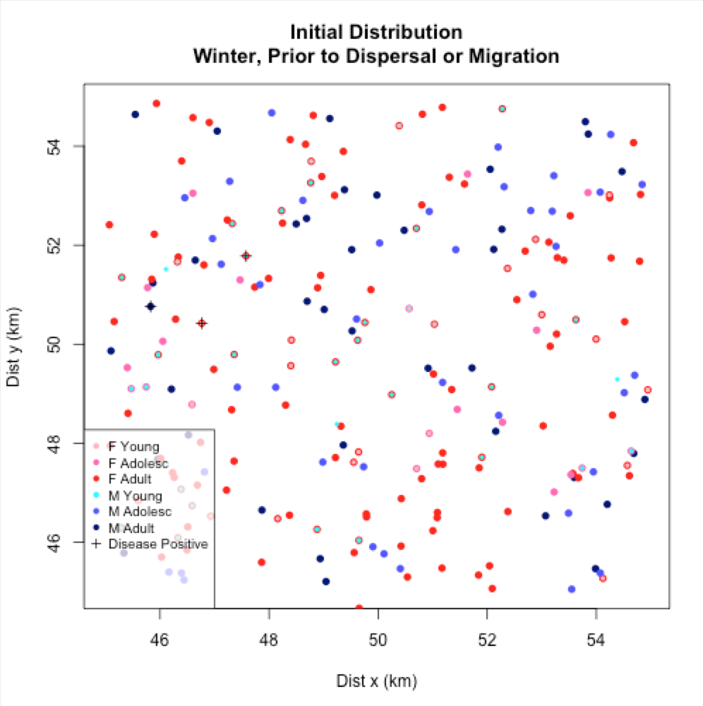
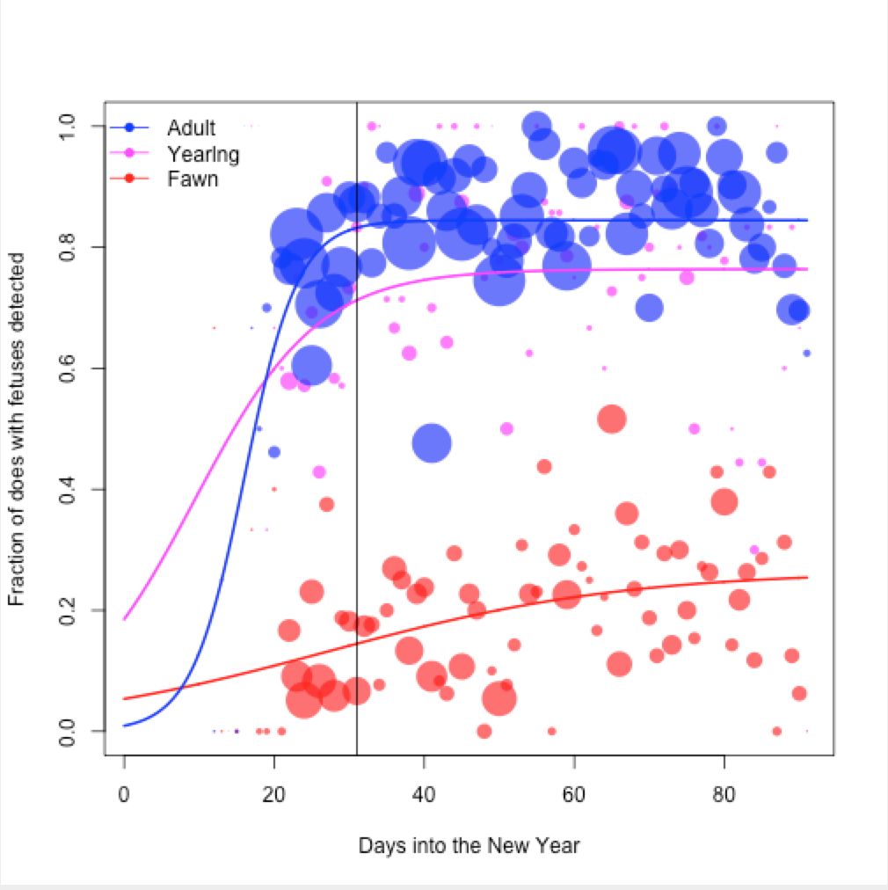
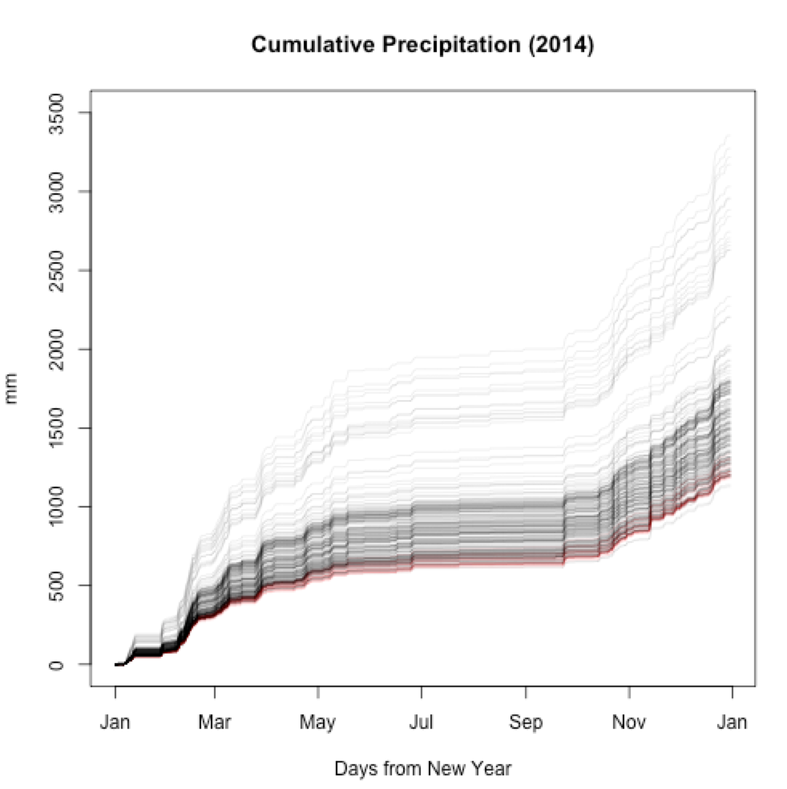

Online projects
Disease Tracker
Simulation

A simulation of disease outbreaks given a broad number of
user-specified parameters.
Disease Control and
Deer Population Dynamics

An analysis of how disease-control methods in Illinois deer
affect their reproduction and population dynamics.
Eugene, Oregon:
Heat Island Analysis

A brief study done for the City of Eugene; City Manager's Office,
for the Climate and Energy Analyst.
Publications
- Satterthwaite-Phillips, Damian, Krenz, Christopher, Gray, Glenn, and Dodd, Liz. (In press, 2015). Iñuuniał̣iqput iḷiḷugu nunaŋŋuanun (Documenting our way of life with maps): Northwest Arctic Borough subsistence mapping project. Vol. 1. Kotzebue, AK: Northwest Arctic Borough. (Samples available upon request.)
- Rivera, Nelda, Novakofski, Jan, Weng, Hsin-Yi, Kelly, Amy, Satterthwaite-Phillips, Damian, Ruiz, Marilyn O., and Mateus-Pinilla, Nohra. (2015). Metals in obex and retropharyngeal lymph nodes of Illinois white-tailed deer and their variations associated with sex and CWD status. Prion, 9:48-58.
- Satterthwaite-Phillips, Damian, Mateus-Pinilla, Nohra, and Novakofski, Jan. (2014). Fatty acid analysis as a tool to infer the diet in Illinois river otters (Lontra canadensis). Journal of Animal Science and Technology, 56:16-24.
- Carpenter, Samantha K., Mateus-Pinilla, Nohra E., Singh, Kuldeep, Lehner, Andreas, Satterthwaite-Phillips, Damian, Bluett, Robert D., Rivera, Nelda A., and Novakofski, Jan E. (2014). River otters as biomonitors for organochlorine pesticides, PCBs, and PBDEs in Illinois. Ecotoxicology and Environmental Safety, 100:99-104.
- Brown, Melissa J., Bossen, Laurel, Gates, Hill, and Satterthwaite-Phillips, Damian. (2012). Marriage Mobility and Footbinding in Pre-1949 Rural China: A Reconsideration of Gender, Economics, and Meaning in Social Causation. The Journal of Asian Studies, 71:1035-1067.
- Satterthwaite-Phillips, Damian, Matteus-Pinilla, Nohra, Green, Michelle L., Manjerovic, Mary Beth, and Novakofski, Jan. (2012). Sharpshooting for Chronic Wasting Disease Control Has Minimal Effects on White-tailed Deer Reproduction. Reports; Illinois Natural History Survey, 408:4-5.
- Satterthwaite-Phillips, Damian, Mateus-Pinilla, Nohra, Cummings, Kevin, Bluett Bob, Novakofski, Jan, and Singh, Kuldeep. (2012). River Otter Reintroduction Programs Successful, but How are They Impacting Prey Species? Reports; Illinois Natural History Survey, 407:4-5.
- Satterthwaite-Phillips, Damian. (2011). Phylogenetic inference of the Tibeto-Burman languages or On the usefulness of lexicostatistics (and "megalo"-comparison) for the subgrouping of Tibeto-Burman. Doctoral Dissertation, Stanford University.
-
Works in progress
- Brown, Melissa J. and Satterthwaite-Phillips, Damian. Economic correlates of footbinding: Implications for women and economic development. (Samples available upon request.)
- Satterthwaite-Phillips, Damian. Statistical inference of the sufficiency of spatial data. Working copy available here.